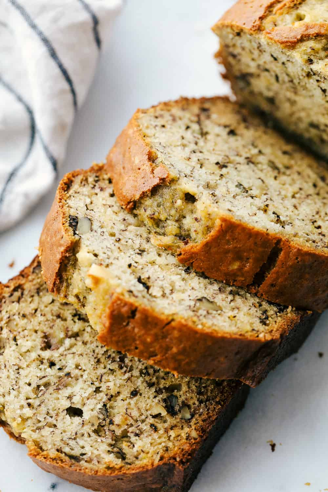

Banana Bread

Description
The perfect dessert to eat after you eat pickle soup.
Ingredients
- 2-3 medium, very ripe bananas, peeled
- 1/3 cup butter
- 1/2 teaspoon baking soda
- 1 pinch salt
- 3/4 cup sugar
- 1 large egg, beaten
- 1 teaspoon vanilla extract
- 1 1/2 cups flour
Steps
- Preheat the oven and grease the pan
- Mash the bananas and add the butter
- Mix in the remaining ingredients
- Bake the bread
- Cool and serve.